Unit 9 Family Guide: Matter & Energy
Opti's Wonder Films · Lessons 26.01 to 28.02 · Weeks 26 to 28

What Are the Properties of Matter?
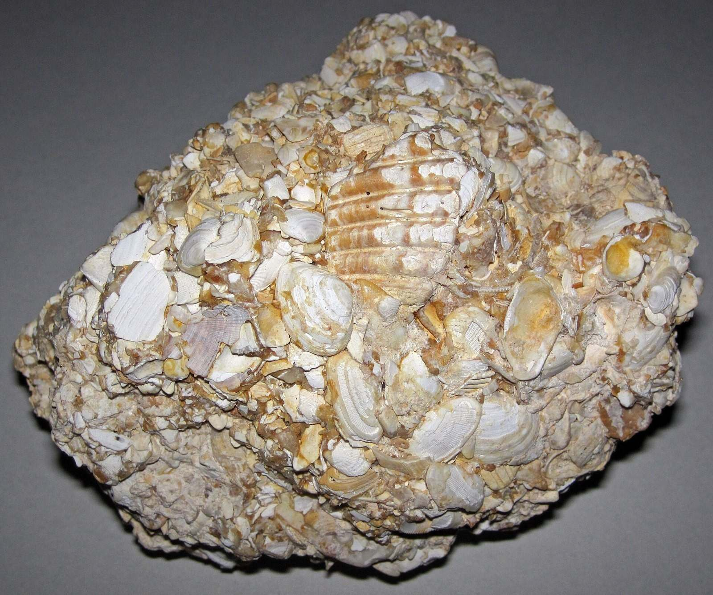
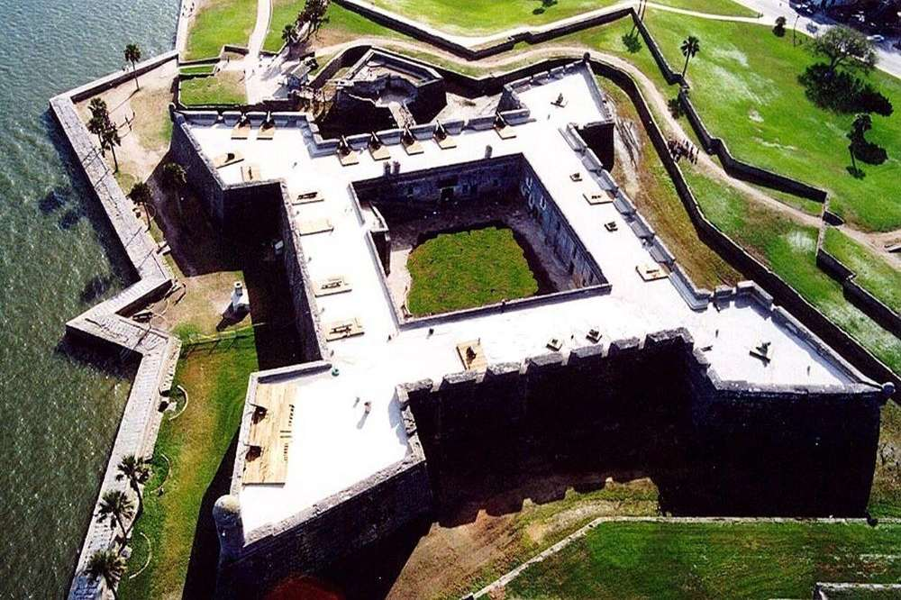
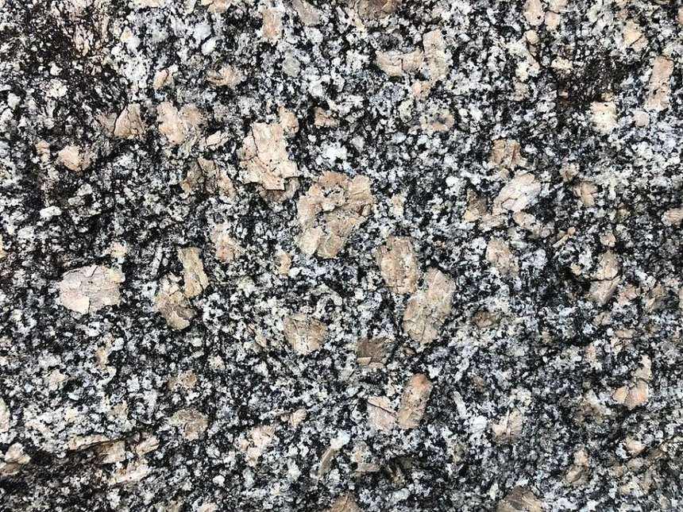
The film's big questionHow do scientists describe and compare different kinds of matter?
What your child learns
- Matter is anything that takes up space and has mass. Solids, liquids and gases (even air) are all matter.
- A property is something you can observe or measure: color, shape, texture, hardness, mass, volume and temperature.
- Scientists use properties to compare objects and to choose the right material for a job.
- The walls of Castillo de San Marcos are coquina, a soft shell rock. In 1740 its walls held through 27 days of cannon fire.
Real specimens they studied
Coquina from Florida's east coast, the fort's shell-rock walls, coquina and granite side by side (the Cannonball Test), and a hardness ladder of real minerals, from soft talc to hard ones a fingernail can't scratch.
Words
- matter
- property
- mass
- volume
- texture
- hardness
Ask at dinner
"Is air matter? How do you know?" (Listen for: yes, because it takes up space (it fills a balloon) and it has mass.)
Try at home
Collect five small things from around the house. Sort them by one property, like texture (smooth or rough), then sort again by a different one.
Investigation: Measuring and Comparing Matter
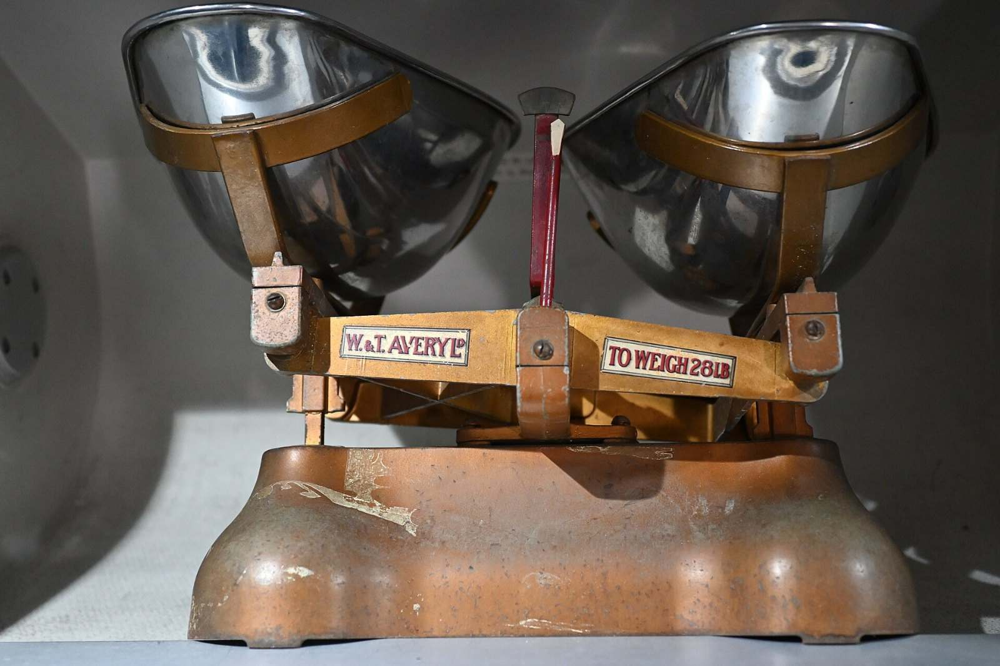
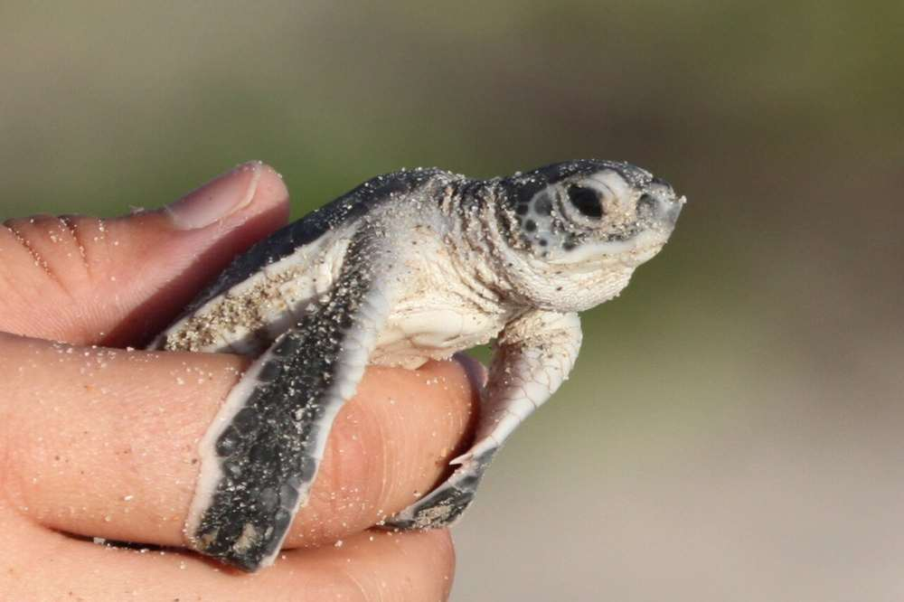
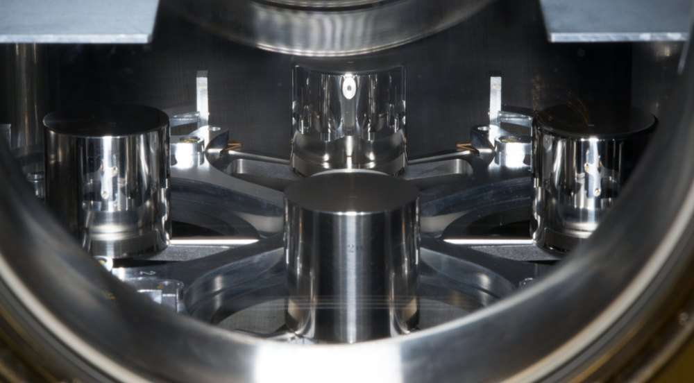
The film's big questionHow can you measure and compare the properties of different objects?
What your child learns
- Scientists measure with tools: a balance for mass (grams), a ruler for length, a measuring cup for volume (milliliters), and a thermometer for temperature (degrees).
- Measurements are numbers anyone can check, so they are more exact than words like "big" or "heavy."
- Two objects can be the same size and have very different masses, like a golf ball and a ping-pong ball.
- Scientists record measurements in data tables and bar graphs to compare. A taller bar means a bigger number.
Real specimens they studied
An old balance with two bowls, a golf ball and a ping-pong ball (the Same-Size Test), Florida scientists measuring sea turtle hatchlings, and real water temperatures from a cool spring to a warm turtle nest.
Words
- measurement
- data
- mass
- volume
- temperature
- bar graph
Ask at dinner
"Two things are the same size. Do they have the same mass?" (Listen for: not always; you have to measure each one on a balance or scale.)
Try at home
Use a kitchen scale or measuring cup together. Measure three things, write the numbers in a little table, and ask which is biggest.
How Does Matter Change When Heated or Cooled?

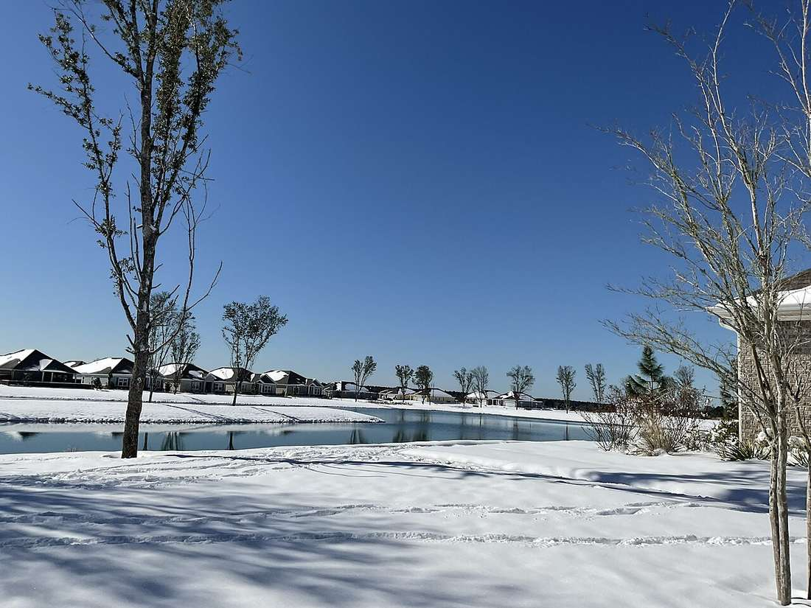
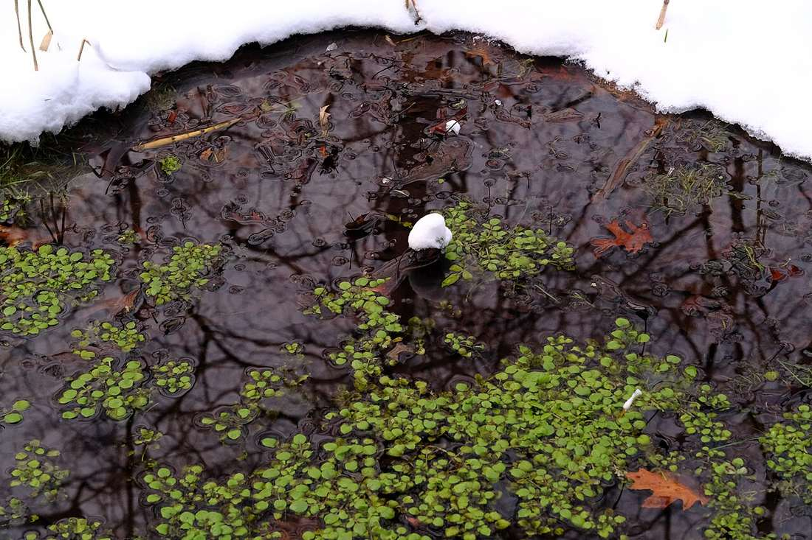
The film's big questionWhat happens to matter when it gets hotter or colder?
What your child learns
- Matter can be a solid, a liquid or a gas.
- Adding heat melts a solid into a liquid and evaporates a liquid into a gas. Taking heat away freezes a liquid into a solid.
- When a puddle dries up, the water isn't gone. It evaporated into water vapor, a gas in the air.
- The Sun heats water, land and air. When the Sun is gone, they cool. In January 2025, snow even fell along Florida's Gulf coast.
Real specimens they studied
Wilson Bentley's 1905 snowflake photo, ice and a glass of water (the Hot-Cold Test), real Florida snow from 2025, and four places from a snowy mountaintop down to the warm Gulf.
Words
- solid
- liquid
- gas
- melting
- freezing
- evaporation
Ask at dinner
"Where does a puddle go when it dries up?" (Listen for: it evaporates; the water turns into water vapor, a gas in the air.)
Try at home
Put an ice cube on a plate in the sun and another in the shade. Check every 10 minutes. Which melts first, and why?
Investigation: Heating, Cooling, and Water Changes

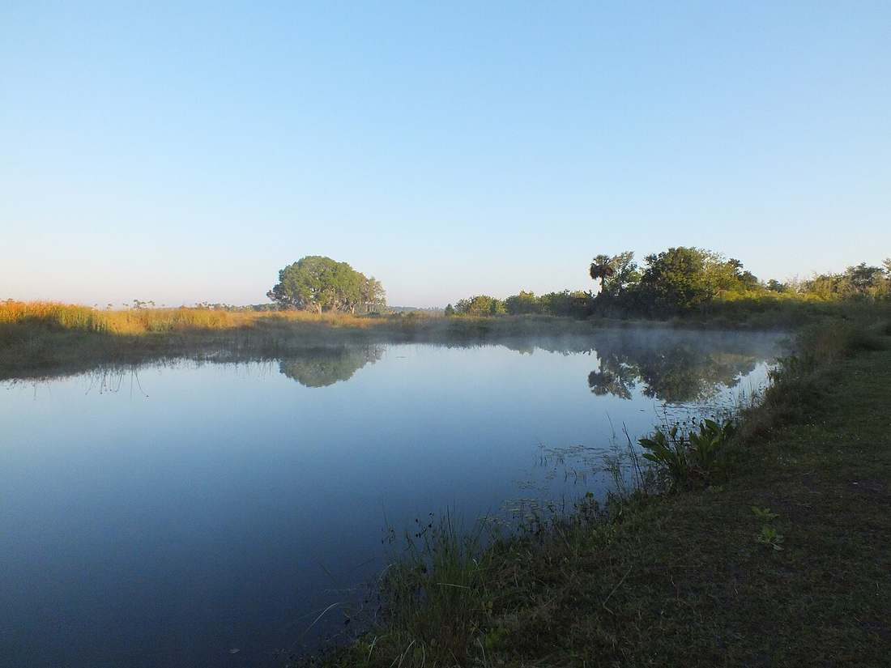

The film's big questionWhat happens to water when you heat it up or cool it down?
What your child learns
- Temperature decides whether water is a solid, a liquid or a gas.
- Heating melts ice and boils water. The big bubbles in boiling water are water vapor, not air.
- Cooling turns water vapor back into drops (condensation) and freezes water into ice.
- Drops on the outside of a cold glass don't leak through. They come from water vapor in the air that cools on the glass.
Real specimens they studied
A cup of ice water on a warm day, ice water and a steaming mug (the Drip Test), misty Florida springs on cold mornings, and the steam trains that once ran to Key West.
Words
- temperature
- heat energy
- boiling
- water vapor
- condensation
- data
Ask at dinner
"Why do drops form on the outside of a cold glass?" (Listen for: water vapor in the air touches the cold glass, cools down and turns back into liquid drops.)
Try at home
Fill one glass with ice water and one with room-temperature water. Wait 10 minutes. Which one gets drops on the outside?
How Does Energy Cause Change?

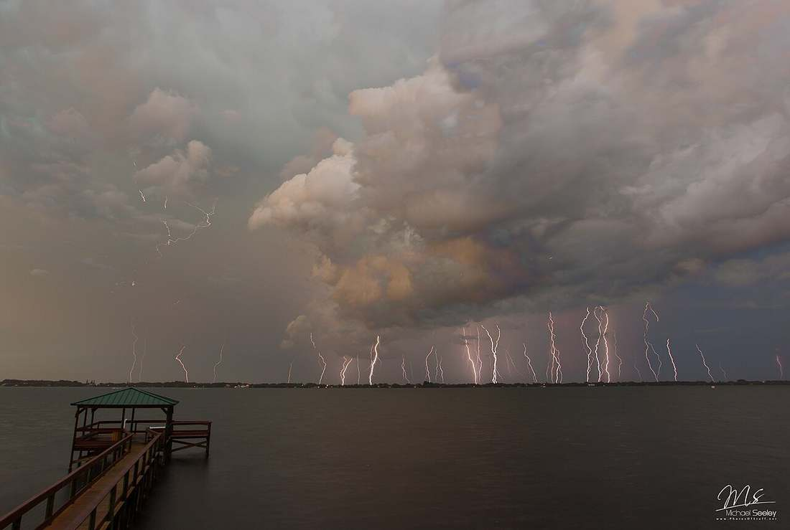

The film's big questionHow does energy cause things to change and move?
What your child learns
- Energy is the ability to cause change. Its forms include light, heat, sound, motion and electrical energy.
- Energy can change form: a flashlight changes electrical energy into light, and rubbing your hands changes motion energy into heat.
- Many things that give off light also give off heat, but not all: a glow stick glows without getting hot.
- The Sun is a star, the closest one to Earth. Central Florida is called the lightning capital of the United States.
Real specimens they studied
A fulgurite (sand melted into glass by lightning), a candle and glow sticks (the Glow Test), lightning towers at Kennedy Space Center, and a trip from the Sun out to faraway stars.
Words
- energy
- light energy
- heat energy
- sound energy
- motion energy
- electrical energy
Ask at dinner
"Why do you see lightning before you hear thunder?" (Listen for: light travels much faster than sound.)
Try at home
Go on an energy hunt at home. Find one thing that makes light, one that makes sound, one that makes heat, and one that moves.
Investigation: Light, Reflection, and Heat

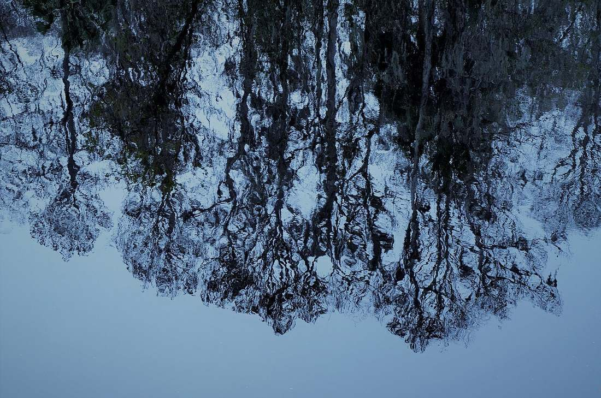
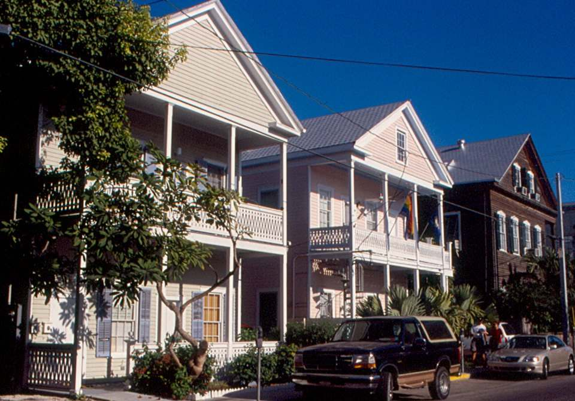
The film's big questionHow do light and heat energy interact with different materials?
What your child learns
- Light travels in a straight line until it hits something. Then it can pass through, bend, bounce off (reflection) or be soaked up (absorption).
- Dark surfaces absorb more light and turn it into heat. Light, shiny surfaces reflect more, which helps white houses, like many in Key West, stay cooler.
- Sunlight takes about 8 minutes to travel from the Sun to Earth.
- Friction, when things rub together, changes motion energy into heat, like glowing race-car brakes or a bow drill starting a fire.
Real specimens they studied
A giant lighthouse lens from Key West, a black shirt and a white shirt (the Shirt Test), one beam of light through glass, water, a mirror and black sand, and real Florida examples from white houses to glowing brakes.
Words
- reflection
- absorption
- refraction
- friction
- heat transfer
- surface
Ask at dinner
"Why does a black car seat get hotter than a white one?" (Listen for: the dark seat absorbs more sunlight, and the light turns into heat.)
Try at home
Lay a dark cloth and a white cloth in the sun for 20 minutes. Feel each one. Then put a pencil in a glass of water and look at it from the side.
Photo credits
- Coquina, a Florida shell rock (26.01): James St. John, CC BY 2.0.
- Castillo de San Marcos, St. Augustine (26.01): National Park Service, Public domain.
- Granite, a hard crystal rock (26.01): Scarlett016, CC BY-SA 4.0.
- An old balance, made in England (26.02): PattayaPatrol, CC BY-SA 4.0.
- Archie Carr National Wildlife Refuge, Florida (26.02): U.S. Fish and Wildlife Service, Public domain.
- Kilogram copies at NIST, the U.S. measurement lab (26.02): National Institute of Standards and Technology (NIST), Public domain.
- A snowflake photo by Wilson Bentley, about 1905 (27.01): Wilson A. Bentley (Museum of Modern Art), Public domain.
- Snow in Milton, Florida, January 2025 (27.01): Jesselikeswx, CC BY 4.0.
- Melting snow makes a puddle (27.01): Gorillo.Chimpo, CC BY-SA 4.0.
- Ice water on a warm day (27.02): PattayaPatrol, CC BY-SA 4.0.
- Morning mist, Lake Woodruff, Florida (27.02): U.S. Fish and Wildlife Service Southeast Region, Public domain.
- A steam train on the way to Key West, 1928 (27.02): Andy Dingley (scanner), Public domain.
- A fulgurite: sand melted into glass by lightning (28.01): Ringwoodit, CC BY-SA 4.0.
- Lightning over the Indian River, Satellite Beach (28.01): Michael Seeley from Melbourne, FL, United States, CC BY 2.0.
- A lightning tower at Kennedy Space Center (28.01): NASA, Public domain.
- A lighthouse lens in a Key West museum (28.02): Acroterion, CC BY-SA 4.0.
- Trees reflected in still water, Lake Tarpon, Florida (28.02): Xrzt, CC BY-SA 4.0.
- White houses in Key West, Florida (28.02): Roger W from Sarasota, Florida, U.S.A., CC BY-SA 2.0.
- Opti the owl: Optima Academy.